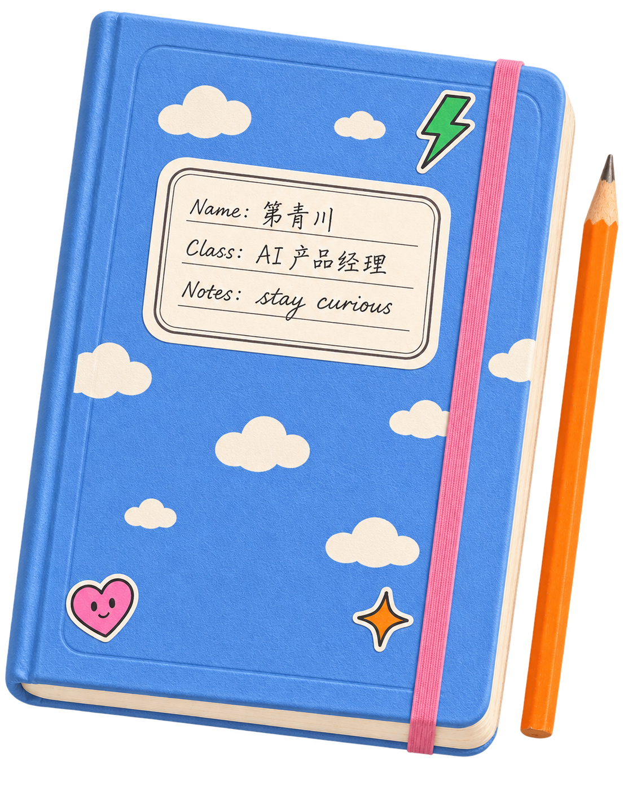

idea no. 01概念探索
AI 知识管理
知序.
让知识，不止于收藏。
探索一个个人知识助手，让零散的资料可以找回、理解，再连接。
hello, fellow curious human.
AI 产品经理
在技术与人的交汇处，探索有价值的产品体验。
把好奇心，写进好用的产品里。
随手记录，认真琢磨。持续更新中。

a few things in the making
从一个「如果可以呢？」开始，
把想法变成看得见的体验。
AI 知识管理
让知识，不止于收藏。
探索一个个人知识助手，让零散的资料可以找回、理解，再连接。
Agent 工作流
把时间，留给创造。
探索可理解、可接手的人机协作，让重复工作顺畅流转。
两份概念草稿，用来展示产品思考；尚未代表已上线项目或验证成果。
a little about me
先对人好奇，再为问题着迷。
你好，我是第青川。这是我的一小块互联网自留地，放着对 AI、产品和日常体验的观察。
从「用户为什么需要它」，到「它如何真正帮上忙」，我想把这些问题一点点想清楚，也做出来。
去 GitHub 串个门走近真实场景，找到值得解决的需求。
关注理解、信任，以及人的掌控感。
用小步尝试，让反馈推动下一次迭代。
notes to self (and to you)
有些问题，值得翻来覆去地想。
点开便笺，一起琢磨。
一个值得探索的起点是：把能力清单换成用户任务。用户在什么场景遇到困难？现在如何解决？一次成功的结果是什么样子？
再把问题缩小到一个可验证的体验：让用户完成一件具体的事，观察哪些环节仍然需要解释、等待或返工。产品的价值，也许就藏在这些细节里。
可以先按任务影响与可逆性划分边界：低风险、容易撤回的步骤允许自主完成；涉及重要承诺的动作，则让用户看清结果并决定。
进一步要问的，是过程是否可理解、出错后是否可恢复，以及人能否随时接手。自主权应当服务于具体任务中的信任。
先写出最不确定的假设，再选择足以检验它的最小体验。例如，要验证用户是否理解某项功能，可以先用交互原型；要验证输出是否有用，则需要真实任务和有代表性的样本。
提前定义值得继续投入的信号，也记录哪些反馈会让方向改变。原型的完成，是下一轮学习的开始。
to be continued...
the next page is ours to write.
聊聊 AI、产品，或者一个还没成形的想法。
第青川 · AI 产品经理